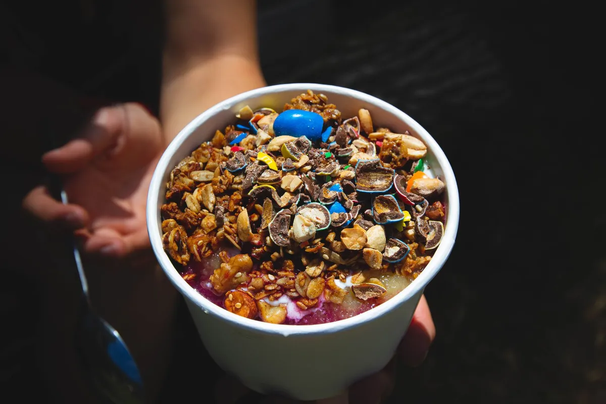

Cardápio digital barato em Porto Alegre (RS): venda direto, sem comissão

Se você tem um restaurante, hamburgueria ou delivery em Porto Alegre, já sabe quanto a comissão das plataformas pesa no fim do mês. Um cardápio digital próprio e barato resolve isso: o cliente pede pelo seu link, o pedido cai direto no seu WhatsApp e todo o lucro fica com você. Sem taxa por pedido, sem perder a sua base de clientes.
O Menuzia é a plataforma de cardápio digital sem comissão que atende delivery em todo o Brasil — e este guia é focado em quem vende em Porto Alegre (RS), de Moinhos de Vento a Bela Vista.
Em Porto Alegre a concorrência de hamburgueria e bar é alta e a margem é apertada: tirar a comissão do meio costuma ser o ajuste mais rápido no lucro do mês.
Por que restaurantes de Porto Alegre estão trocando o iFood pelo cardápio próprio
A comissão do iFood vai de 12% a mais de 30% por pedido. Para um delivery que fatura bem em Moinhos de Vento ou Menino Deus, isso vira milhares de reais por mês indo embora — e a lista de clientes continua sendo da plataforma, não sua.
- Sem comissão: R$67/mês fixo, venda quanto vender.
- Base de clientes sua: quem pede em Petrópolis, Cidade Baixa ou Bom Fim entra na sua lista pra sempre.
- Pedido direto no caixa: sem intermediário entre você e o cliente de Porto Alegre.
Veja o passo a passo completo de como sair do iFood e vender direto sem perder clientes.
Cardápio digital para delivery em qualquer bairro de Porto Alegre
O cardápio do Menuzia funciona 100% online — não importa se o seu delivery fica em Moinhos de Vento, Menino Deus, em Petrópolis, em Cidade Baixa ou em Bela Vista. Você define a taxa de entrega por bairro, conecta o WhatsApp e começa a receber pedidos no mesmo dia.
É ideal para hamburguerias, pizzarias, açaíterias, restaurantes e lanchonetes que querem profissionalizar o delivery sem depender do iFood. Veja como criar um cardápio digital para hamburgueria passo a passo.
Atendemos todo o delivery de Porto Alegre
O Menuzia configura o cardápio digital de restaurantes e deliverys nestes e em todos os bairros de Porto Alegre:
- Moinhos de Vento
- Menino Deus
- Petrópolis
- Cidade Baixa
- Bom Fim
- Bela Vista
- Higienópolis
- Tristeza
- Partenon
- Auxiliadora
- Santana
- Ipanema
- Centro Histórico
- Rio Branco
- Jardim Botânico
- Azenha
- Sarandi
- Cavalhada
- Restinga
- Teresópolis
- Passo d'Areia
- Cristal
- Vila Nova
- Jardim Itu
Cardápio digital barato em Porto Alegre: quanto custa de verdade
No Menuzia é R$67/mês fixo, sem comissão por pedido — com configuração feita pela nossa equipe e suporte incluso. Compare: um delivery em Porto Alegre que fatura R$25 mil/mês pagando 18% de comissão joga fora R$4.500 todo mês. Com um plano fixo, esse dinheiro volta pro seu caixa.
É por isso que "barato" aqui não é cardápio ruim: é custo previsível. Você sabe exatamente quanto vai pagar no mês, venda 50 ou 5.000 pedidos. Veja o plano de cardápio digital barato, entenda quanto custa um cardápio digital próprio e se cardápio digital sem comissão vale a pena.
Como começar em Porto Alegre (passo a passo)
- Você assina o Menuzia por R$67/mês.
- Nossa equipe monta o seu cardápio digital com fotos, categorias e taxa de entrega por bairro de Porto Alegre.
- Conectamos o WhatsApp e o robô de atendimento 24h.
- Você divulga o link na bio do Instagram, no status do WhatsApp e em panfletos com QR Code pela cidade.
- Os pedidos caem direto no seu caixa — e cada cliente vira base sua pra disparar campanhas de WhatsApp.
Perguntas frequentes — cardápio digital em Porto Alegre
O Menuzia atende restaurantes em Porto Alegre?
Sim. O Menuzia atende restaurantes, hamburguerias, pizzarias, açaíterias e qualquer delivery em toda Porto Alegre — de Moinhos de Vento e Menino Deus a Higienópolis, Tristeza e Partenon. Tudo é online: nossa equipe configura o seu cardápio digital remotamente e dá suporte.
Quanto custa um cardápio digital em Porto Alegre?
O Menuzia custa R$67 por mês, valor fixo, sem comissão por pedido. É um dos cardápios digitais mais baratos em Porto Alegre justamente porque o preço não sobe quando você vende mais — diferente do iFood, que cobra uma porcentagem de cada venda.
Existe cardápio digital grátis em Porto Alegre?
Existem opções "grátis" que cobram comissão por pedido ou limitam recursos essenciais (WhatsApp, taxa por bairro, relatórios). Na prática, o grátis costuma sair mais caro que R$67/mês assim que o volume de pedidos cresce.
Preciso de loja física para ter o cardápio digital?
Não. Funciona com o seu delivery em qualquer bairro de Porto Alegre. O cliente abre o link do cardápio no celular, escolhe e o pedido cai direto no seu WhatsApp e no seu caixa, sem aplicativo.
Dá para configurar entrega por bairro de Porto Alegre?
Sim. Você define a taxa de entrega por bairro — Moinhos de Vento, Menino Deus, Petrópolis, Cidade Baixa e os demais — além de raio de entrega, pagamento (Pix, cartão, dinheiro) e horários.
Tenha seu cardápio digital em Porto Alegre hoje
Pare de pagar comissão. R$67/mês fixo, nós configuramos pra você e damos suporte.
Criar Meu Cardápio Agora →